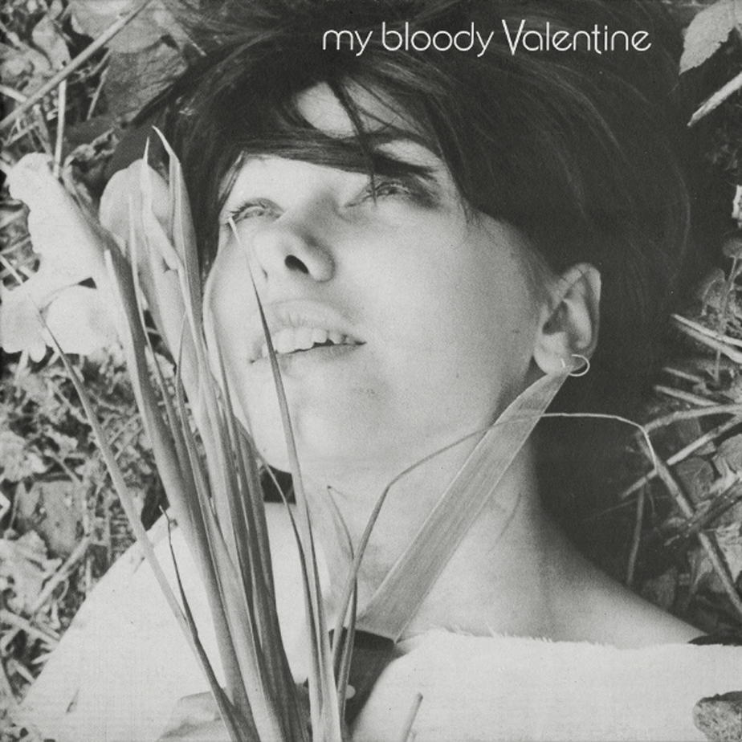
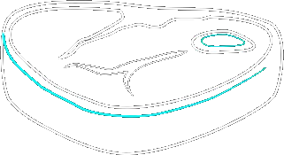

You Made Me Realise
My Bloody Valentine
1988 • 5 songs • 19:23
Genres: Shoegaze, Noise Pop, Dream Pop
A little fun fact: 4 out of 5 tracks on this EP are on the band's liveshow setlist 20 years later. And the track "Drive It All Over Me" is one of their most notorious live numbers and also a MBV classic.
This EP is noisy, raw, energetic and dissonant.

More raw and punk-influenced